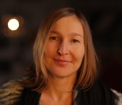

At the festival
2021
- Speaker The Surveillance Trilogy Panel
2017
- Instructor Safeguarding Sources: A Practical Guide for Investigative Filmmakers Workshop
Biography
Ines Hofmann Kanna is an independent producer with more than twenty years of experience. She produced Sonia Kennebeck’s Emmy-nominated National Bird (Berlin 2016) as well as Kennebeck’s Enemies of the State (TIFF 2020) and Cecilia Aldarondo’s most recent film Landfall (Tribeca 2020). She began her career at Boston’s PBS station, WGBH, and has filmed in places as close as Iowa and as far as Yemen and Saudi Arabia. She also worked as Supervising Producer for ITVS, where she guided more than thirty filmmakers from production to broadcast. Ines was born in East Germany and lives in Oakland, California.
From the festival website (archived), 2021
Other bios (1)
Ines Hofmann Kanna has been producing and directing film and television projects for over 20 years. She began her career at Boston’s PBS station, WGBH, where she worked for 10 years, most notably on the hit series ANTIQUES ROADSHOW. She was also a supervising producer for ITVS, guiding more than thirty filmmakers from production to broadcast, and acted as series producer on two ITVS documentary series, GLOBAL VOICES and WOMEN OF THE WORLD.
From the 2017 catalogue, p. 46